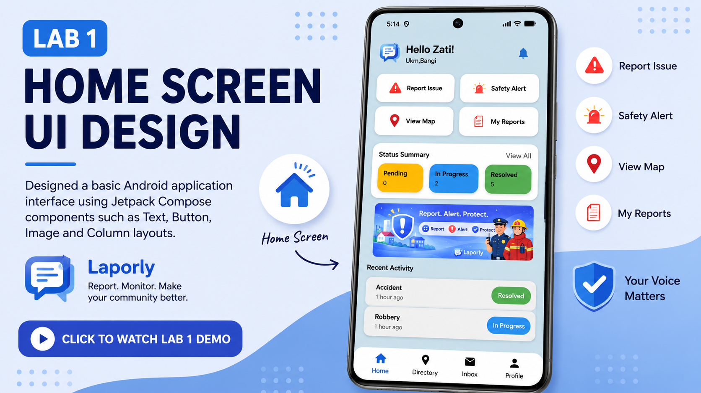
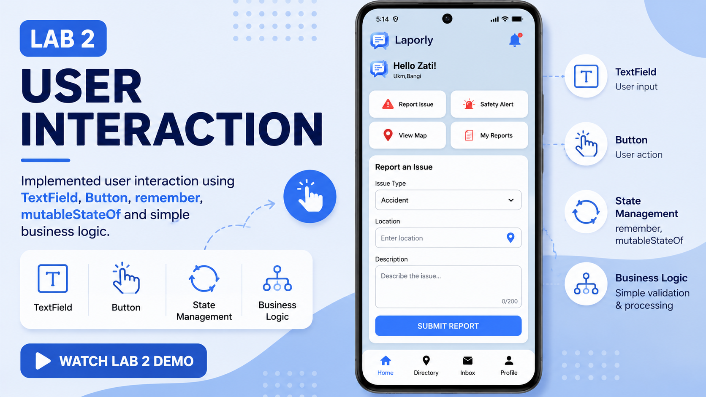
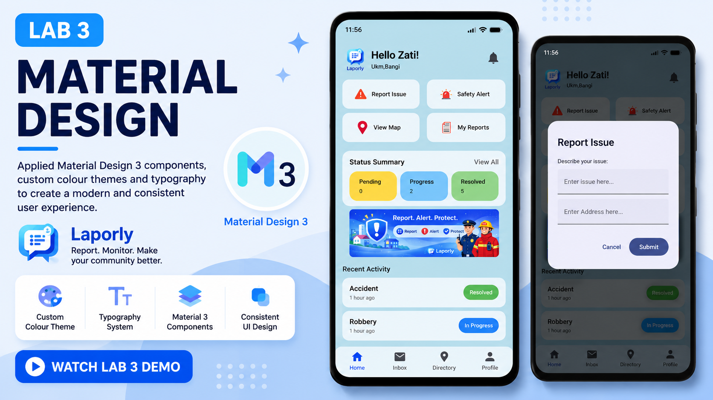
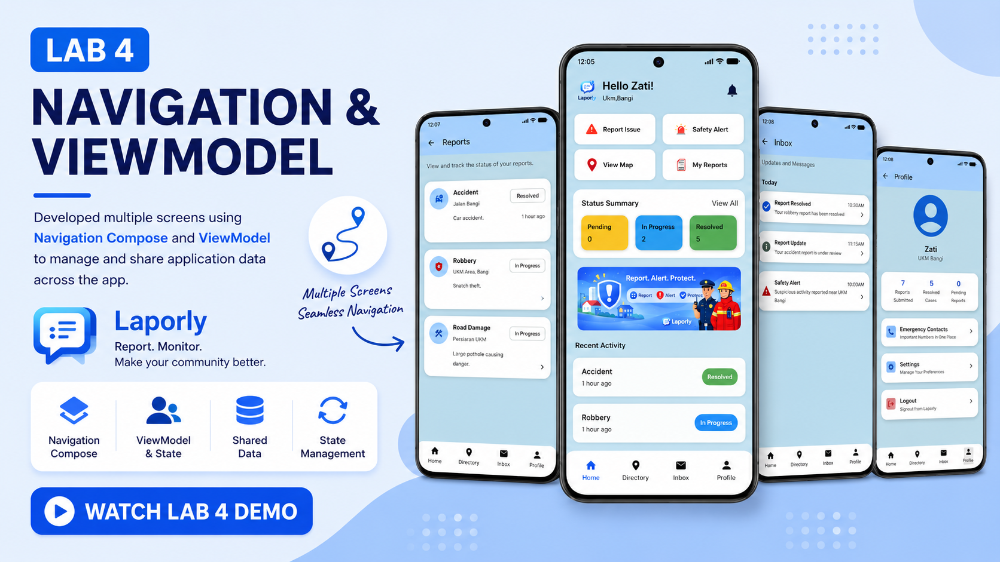
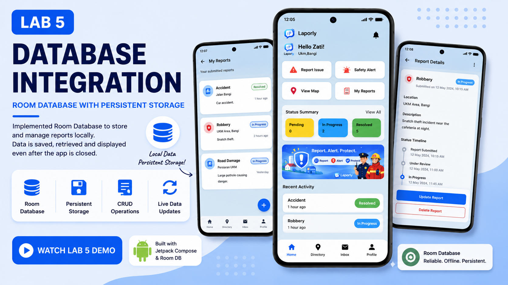
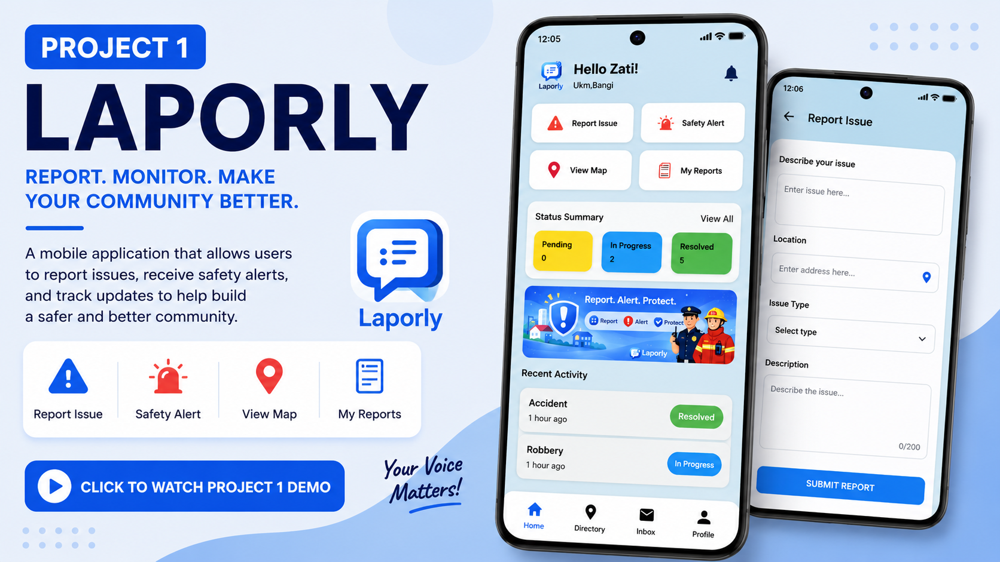
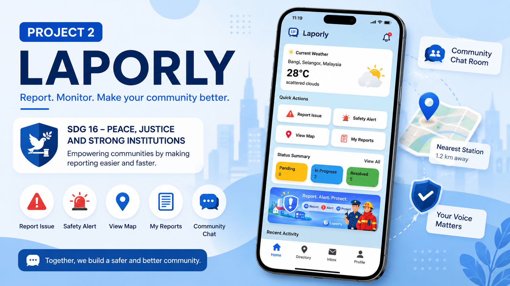

Matric No: A209202
Bachelor of Information Technology
Universiti Kebangsaan Malaysia
Instructor: Dr. Rimaniza
This e-Portfolio showcases my learning journey throughout the Mobile Programming course using Kotlin and Jetpack Compose. Each lab progressively introduced new Android development concepts, from designing user interfaces to implementing local databases, navigation, cloud integration, internet APIs and hardware sensors.
My final application, Laporly, focuses on SDG 16 – Peace, Justice and Strong Institutions. The application enables users to report public issues digitally while improving communication between the community and responsible authorities.
Designed a basic Android application interface using Jetpack Compose components such as Text, Button, Image and Column layouts.

🎥 Click the thumbnail to watch Lab 1 Demo
This lab introduced me to the fundamentals of Jetpack Compose. I learned how composable functions work together to build modern Android user interfaces while understanding layout arrangements and reusable UI components.
Implemented user interaction using TextField, Button, remember, mutableStateOf and simple business logic.

🎥 Click the thumbnail to watch Lab 2 Demo
I learned how state management updates the interface automatically whenever user input changes. This lab helped me understand reactive programming using Jetpack Compose.
Applied Material Design 3 components, custom colour themes and typography to improve user experience and interface consistency.

🎥 Click the thumbnail to watch Lab 3 Demo
This activity taught me the importance of visual consistency and accessibility. I also learned how themes and colour schemes make applications more professional.
Developed multiple screens using Navigation Compose and implemented ViewModel to manage shared application data.

🎥 Click the thumbnail to watch Lab 4 Demo
I understood how navigation works between screens and how ViewModel preserves application data. This became the foundation for my first mobile application project.
Integrated Room Database to perform Create, Read, Update and Delete (CRUD) operations with persistent local storage.

🎥 Click the thumbnail to watch Lab 5 Demo
This lab strengthened my understanding of Android architecture by integrating Room, Repository and ViewModel. I learned how to save user data permanently even after the application is closed.
Application: Laporly
Problem Statement
Many members of the public experience difficulties reporting local issues because existing
reporting channels are often fragmented and inconvenient. Laporly provides a simple mobile
platform that allows users to submit reports and access community safety information quickly.

🎥 Click the thumbnail to watch Project 1 Demo
Project 1 combined everything that I learned from the first four laboratories. I gained confidence in organising an Android application using multiple composable screens, ViewModel and Navigation Compose while improving my UI design skills.
Application: Laporly
Problem Statement
Communities often struggle to report incidents efficiently and monitor report progress.
The enhanced version of Laporly integrates local storage, cloud services, internet data
and mobile sensors to provide a smarter reporting platform aligned with
SDG 16 – Peace, Justice and Strong Institutions.

🎥 Click the thumbnail to watch Lab 2 Demo
This project strengthened my understanding of Android application architecture by combining local database, cloud database, APIs and hardware sensors into one application. I also improved my debugging, problem-solving and software integration skills throughout the development process.
Throughout this Mobile Programming course, I gradually developed a deeper understanding of Android application development using Kotlin and Jetpack Compose. Starting from simple user interface design, I progressed to implementing user interactions, Material Design, multi-screen navigation, ViewModel state management and local database integration using Room.
The final project challenged me to integrate multiple technologies including Firebase Firestore, Internet APIs and hardware sensors into a single application. Although I encountered many debugging and compatibility issues, every challenge improved my logical thinking, software architecture knowledge and confidence in Android development.
Overall, this course has strengthened both my technical and problem-solving skills. It also encouraged me to build applications that solve real-world problems while supporting the United Nations Sustainable Development Goals (SDGs).
Kotlin, XML, SQL
Jetpack Compose, Navigation Compose, ViewModel, State Management, Material Design 3
Room Database, Firebase Firestore
REST API Integration, JSON Parsing
Android Studio, GitHub, Git, Gradle
Problem Solving, UI/UX Design, Debugging, Mobile Application Development
This portfolio was developed using knowledge gained throughout the Mobile Programming course, official Android documentation, online learning resources and AI-assisted learning tools such as ChatGPT to improve understanding, debugging and code explanation.